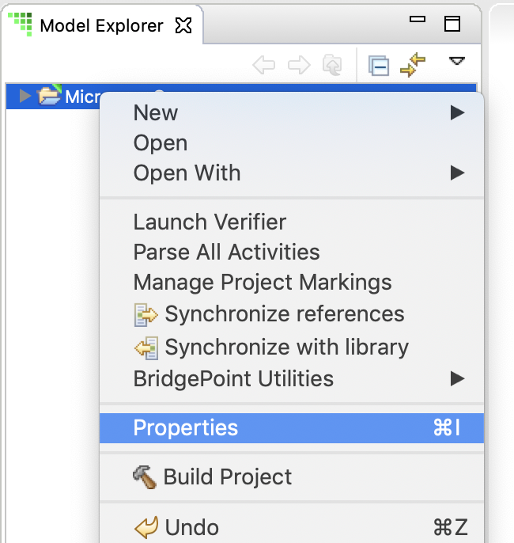

BridgePoint supports the following workspace-level preferences. These preferences
apply to all xtUML projects in the workspace. The xtUML preferences are part of
the main eclipse Preferences and may be accessed via the main menu at Window > Preferences
on Linux and Windows and BridgePoint > Preferences... on MacOS.
BridgePoint supports the following project-level preferences. These preferences
apply individually to each project.
The project preferences are accessed via the Model Explorer context menu:
